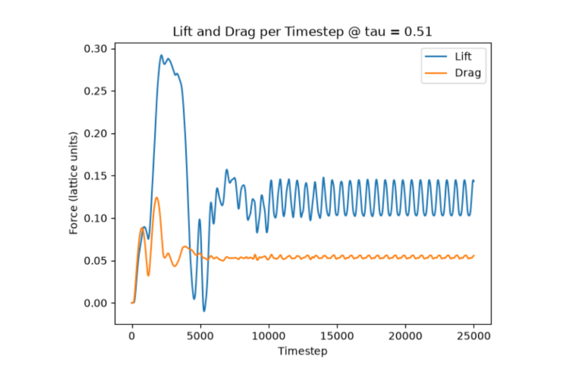

This project is still ongoing. Many current day CFD software such as AutodeskCFD or Fluent require significant effort to simply run a simulation.
Much of the headache is attributed to downloading the software itself and setting up the environment. However, for the majority of beginners, hobbyists and even design teams, much of the advanced settings are unused and only serve to clutter the UI.
This project serves to solve this issue by making a simplified beginner friendly CFD to remove the barrier of entry. Photos, results and challenges will be updated as the project continues.
Update 1: Stability is reached for tau = 0.51, collision operator is refined, LES simulation is implemented
Update 2: LES simulation is fixed, refined inlet and outlet conditions, as well as boundary conditions
Update 3: Forces can be extracted, verification can begin
Update 4: Strouhal number verification for various shapes is completed.
Pictures
Circle Simulation
Current working prototype of the 2D CFD Simulation. Contains a simple grid UI that allows the user to draw any shape to insert into the simulation. Autofill capabilities (not shown) are available through a BFS. Stability is maintained between many geometries, including those with sharp corners. Complex flow features including roll-up vorticies are visible indicating suffificent simulation accuracy, although total verification is still yet to be done.
LBM Simulation
Flow simulated around a square geometry. Velocity is plotted with low velocities being blue and faster velocities being green/yellow. Notable Von Karmann vorticies can be seen behind the cube. Stability is maintained even around the square corners.
Circle Simulation Curl
Flow velocity visualization around a NACA 2412 airfoil at 20 degrees AOA. Visible flow seperation can be seen, as well as periodic trailing edge vortex shedding.

Data plot
Strouhal number verification for a NACA 0012 airfoil at 8 deg AOA and a Reynolds number of 2000. 25000 timesteps are plotted. The lift oscillations reveal well-behaved periodic vortex shedding beyond ~12000 time steps. Extracting this data corresponds to a chord-wise Strouhal number of 1.15 +/- 0.012, which falls within 1.7% of an accepted and published Strouhal number (1.17) for the same geometry and conditions. This accepted figure was simulated using ANSYS Fluent.